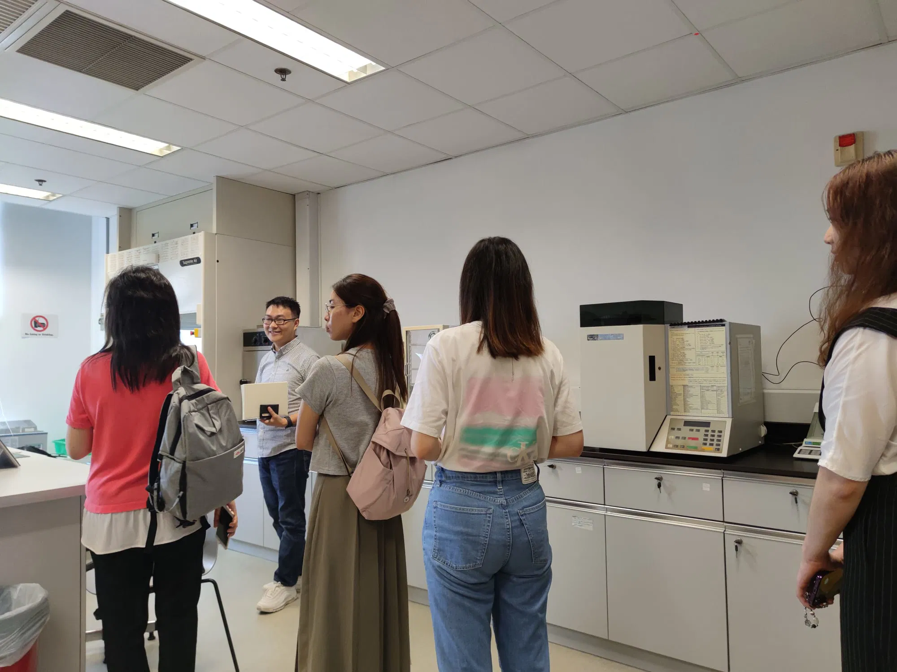
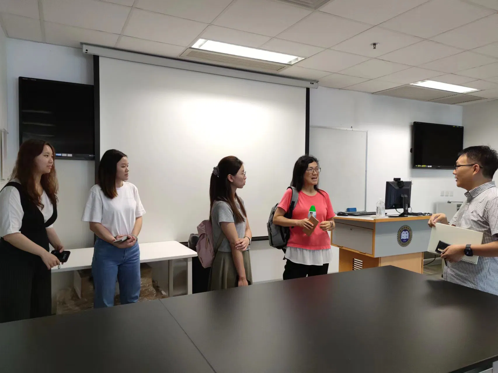

18/8/2023
-
On 10 Aug 2023, the kick-off meeting of an EPD-funded project '' was held at HKBU. Dr. Lyu introduced his group, focus of his research, and plan of this project to EPD colleagues Ms. LO Tze Yan, Sonia and Carmen. Hongyong Li and Runjing Zhou from HKBU and Beining Zhou, Bessie from PolyU attended the meeting.
- Sonia and Carmen also visited the labs and discussed with BU group on other collaboration opportunities.

